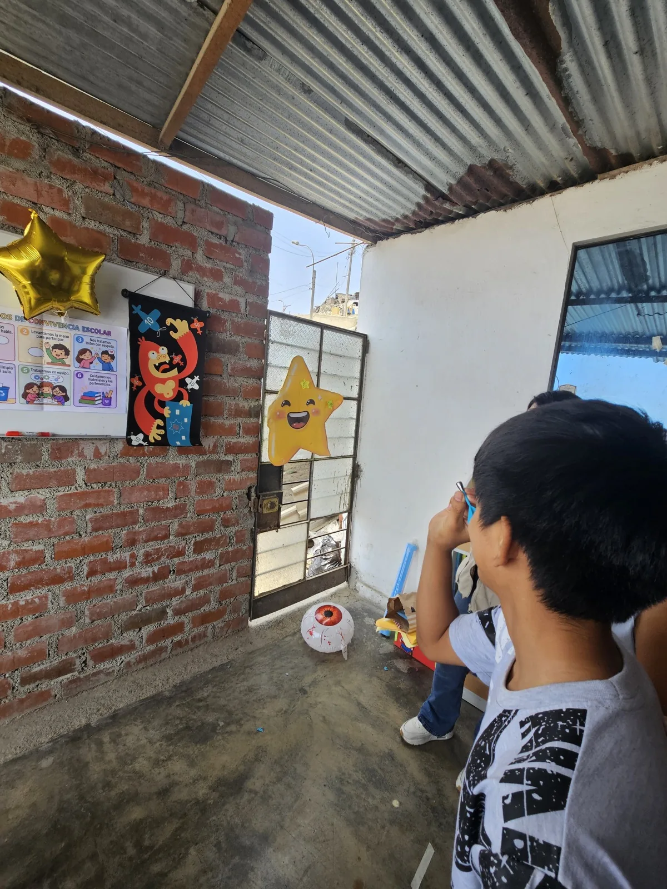

Escuchamos
Conocemos a la comunidad y sus necesidades.
Lo que hacemos
Articulamos proyectos educativos, una biblioteca comunitaria, espacios formativos y acciones solidarias.


Soñando Libros desarrolla comprensión lectora, expresión y creatividad.
Conoce más
Una biblioteca comunitaria para descubrir y compartir nuevas lecturas.
Conoce más
Experiencias participativas para acompañar el aprendizaje y las emociones.
Conoce más
Campañas y colaboraciones que responden a necesidades concretas.
Conoce másCómo trabajamos
Conocemos a la comunidad y sus necesidades.
Definimos objetivos, lecturas y actividades.
Trabajamos con facilitación y apoyo voluntario.
Recogemos experiencias y mejoramos los siguientes encuentros.
Juntando corazones para crear alegría
Si representas a una institución, conversemos sobre una iniciativa educativa o una conferencia.